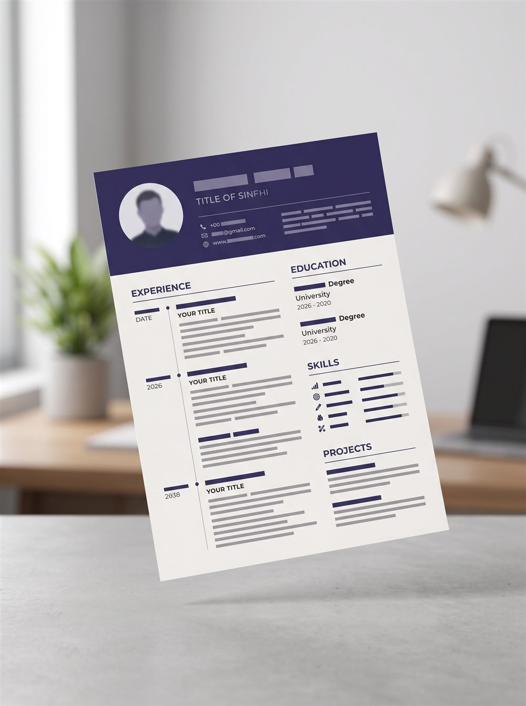

Seu currículo pronto em 10 minutos. Aprovado por robôs de triagem.
Do primeiro emprego ao nível acadêmico mais avançado. Gere um documento impecável, otimizado para sistemas ATS e conquiste mais entrevistas.

Criar seu currículo nunca foi tão simples
Três passos rápidos separam você da sua próxima oportunidade profissional.
Preencha os dados
Insira suas informações passo a passo em um assistente inteligente com dicas em tempo real para valorizar seu perfil.
Escolha o modelo
Alterne instantaneamente entre 5 modelos de alta conversão, desde layouts focados em IA (ATS) até modelos acadêmicos completos.
Baixe em PDF ou Word
Exporte o arquivo final formatado perfeitamente pronto para impressão ou envio digital para as plataformas de vaga.
Por que escolher o CurrículoPro?
Desenvolvido sob a ótica de recrutadores e especialistas em tecnologia de triagem.
100% Compatível com ATS
Os modelos são estruturados para que os robôs de leitura de currículos identifiquem perfeitamente suas competências sem erros de leitura.
Privacidade Absoluta
Seus dados pessoais pertencem unicamente a você. O processamento ocorre localmente em seu navegador; nada vai para um servidor externo.
Funciona Perfeitamente no Celular
Tanto a landing page quanto o editor de currículos se adaptam com maestria à sua tela de smartphone para criar de onde estiver.
5 modelos profissionais, um clique para trocar
Preencha uma única vez e alterne entre os layouts instantaneamente, com cores, fontes e espaçamentos personalizáveis.
Essencial
Recomendado p/ ATSExecutivo
Gerência e liderança
Moderno
Tecnologia e negócios
Criativo
Design e marketing
Acadêmico
Mestres e doutores
Quem usou, aprovou
Histórias reais de profissionais que se recolocaram rapidamente no mercado.
"O modelo ATS-first me salvou. Estava há 6 meses enviando currículos cheios de gráficos e não passava da triagem inicial. Na mesma semana que usei o CurrículoPro, fui chamado para duas entrevistas."
"Como doutoranda, precisava de um formato que comportasse minhas publicações e projetos sem parecer poluído. O layout acadêmico é perfeito, muito limpo e elegante."
"Interface extremamente intuitiva pelo celular. Consegui montar meu currículo completo de assistente administrativa no ônibus voltando do trabalho anterior."
Acesso Vitalício Imediato
Sem assinaturas recorrentes, cobranças surpresas ou pegadinhas. Pague apenas uma vez e edite sempre que precisar.
- Acesso completo aos 5 modelos
- Exportações ilimitadas em PDF e Word
- Salvamento automático seguro
Perguntas Frequentes
Tudo o que você precisa saber sobre a plataforma.
O sistema funciona no meu aparelho celular?
Sim! Toda a plataforma foi construída sob a metodologia Mobile-First. Você pode preencher todos os seus dados, escolher estilos e exportar os arquivos perfeitamente pelo smartphone.
Os modelos de currículo são compatíveis com ATS?
Com certeza. O modelo "Essencial", recomendado por padrão, segue à risca as regras de escaneabilidade dos principais softwares de recrutamento de inteligência artificial do Brasil (como Gupy, Sólides, Kenoby).
Meus dados confidenciais ficam guardados em algum servidor?
Não. Por motivos estritos de segurança e conformidade à LGPD, todas as informações digitadas ficam alocadas estritamente na memória local do seu navegador (localStorage). Seus dados não saem do seu dispositivo.
Posso voltar e editar o currículo mais tarde?
Sim. Como salvamos o progresso automaticamente no cache do seu computador ou celular, basta abrir o site no mesmo dispositivo para continuar a edição de onde parou de forma imediata.
O pagamento é recorrente (assinatura mensal)?
Não! O valor é um preço único e simbólico de R$ 9,90 sem cobranças posteriores ocultas. Comprou, o acesso vitalício à ferramenta está garantido.
Depois de pagar, recebo o acesso na hora?
Após o pagamento, você é levado a uma página onde pode nos avisar em 1 clique via WhatsApp ou e-mail. Isso agiliza a liberação para poucos minutos em horário comercial (até 2 horas úteis em outros horários) — um cuidado extra que temos justamente por não guardarmos seus dados em cadastro algum.
E se eu me arrepender da compra? Existe reembolso?
Sim. Conforme o Código de Defesa do Consumidor (art. 49), você tem 7 dias corridos após a compra para solicitar reembolso integral, sem precisar justificar. Basta enviar um e-mail para o nosso suporte com os dados da transação.
Posso criar quantos currículos eu quiser?
Sim, sem limites. Você pode montar versões diferentes do seu currículo para cada vaga, alternar entre os 5 modelos e exportar em PDF e Word quantas vezes precisar — tudo incluído no pagamento único.
Posso acessar meu rascunho de outro celular ou computador?
Como seus dados ficam salvos apenas no dispositivo em que você digitou (por privacidade, nada vai para servidores), o rascunho não é sincronizado entre aparelhos. Nossa recomendação: conclua e exporte o currículo no mesmo dispositivo. Os arquivos PDF e Word baixados, claro, podem ser usados onde você quiser.